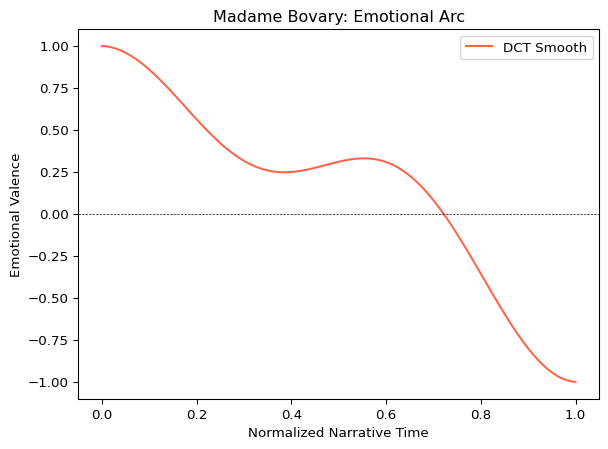
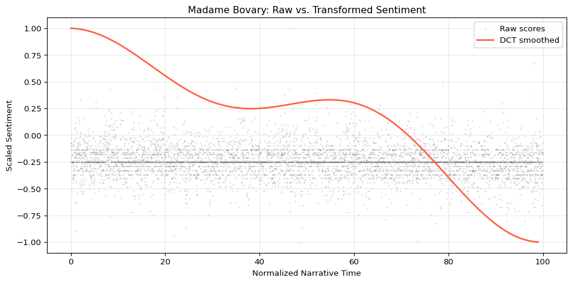
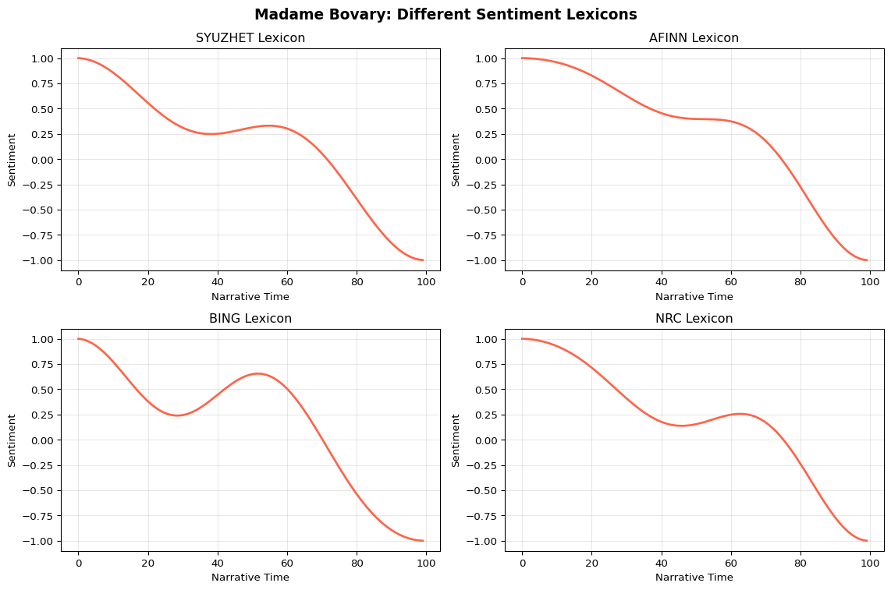

# Sentiment analysis and narrative trajectories
from moodswing import (
DictionarySentimentAnalyzer,
Sentencizer,
DCTTransform,
prepare_trajectory,
plot_trajectory
)
from moodswing.data import load_sample_text
# Data manipulation and visualization
import polars as pl
import matplotlib.pyplot as plt
import numpy as np1 Texts, Algorithms, and Black-Boxes

We’re going to start by unpacking the controversy regarding the syuzhet package—originally developed for R by Matthew Jockers, and now available in Python as moodswing. This is a useful exercise because it gets to some foundational issues in computational text analysis. These are questions you’re going to encounter in your work, so they’re worth considering from the beginning:
- How much do we know about what’s happening “under the hood”?
- How much should we know?
- Is showing that Madame Bovary has a downward emotional arc even interesting (even though it looks cool)?
- Can we take something like narrative arcs and apply them to genuinely interesting research questions?
1.1 The Syuzhet Controversy
In 2015, Matthew Jockers published work on extracting “plot shapes” from novels using sentiment analysis. The approach went viral, appearing in places like The Atlantic and The New York Times. But it also sparked intense debate about whether the methods were sound.
The controversy centered on whether the Discrete Cosine Transform (DCT)—a mathematical technique Jockers borrowed from signal processing—was appropriate for this task, or whether it was imposing patterns on the data that weren’t really there.
Key readings:
- Annie Swafford’s critique: Why Syuzhet Doesn’t Work
- Jockers’ response and updates: Matthew Jockers’ blog (archived)
This is a case where the developer didn’t fully understand the statistics he was applying when he created the package. That’s not necessarily disqualifying—but it means we need to be critical consumers of computational methods.
Why Start Here?
Sentiment analysis is intuitive—everyone understands the idea of emotional tone in a text. That makes it a good entry point for thinking critically about how we convert human experiences (reading, interpreting) into computational processes (scoring, transforming, visualizing).
1.2 Load Packages and Data
We’ll use moodswing, the Python implementation inspired by syuzhet, along with some standard data science libraries.
The novels that Jockers used as examples are included in the moodswing package. There are 4 novels available as sample data:
# Available novels
novels = ["madame_bovary", "portrait_of_a_lady", "dubliners", "jude_the_obscure"]
# For this demonstration, we'll use Madame Bovary
doc_id, text = load_sample_text("madame_bovary")
print(f"Loaded: {doc_id}")
print(f"Length: {len(text):,} characters")Loaded: madame_bovary
Length: 648,257 characters1.3 Prep the Data and Calculate Sentiment
Next, we’ll split the novel into sentences and calculate a sentiment score for each sentence using the Syuzhet lexicon (the same dictionary used in the original R package).
# Split text into sentences
sentencizer = Sentencizer()
sentences = sentencizer.split(text)
print(f"Number of sentences: {len(sentences)}")Number of sentences: 6943Now we’ll score each sentence using the Syuzhet lexicon:
# Create sentiment analyzer
analyzer = DictionarySentimentAnalyzer()
# Calculate sentiment scores for each sentence
# method="syuzhet" uses the same dictionary as the original R package
scores = analyzer.sentence_scores(sentences, method="syuzhet")
print(f"First 10 scores: {scores[:10]}")First 10 scores: [1.2000000000000002, 0.25, 0.0, 1.5, 1.05, 1.2000000000000002, 1.0, -0.25, 0.0, 0.4]Let’s examine these scores in a DataFrame for easier inspection:
# Create a dataframe to view scores
import polars as pl
df_scores = pl.DataFrame({
"sentence_num": range(1, len(scores) + 1),
"sentiment": scores,
"sentence": sentences
})
# View first 10 rows
print(df_scores.head(10))shape: (10, 3)
┌──────────────┬───────────┬─────────────────────────────────┐
│ sentence_num ┆ sentiment ┆ sentence │
│ --- ┆ --- ┆ --- │
│ i64 ┆ f64 ┆ str │
╞══════════════╪═══════════╪═════════════════════════════════╡
│ 1 ┆ 1.2 ┆ Part I Chapter One We were in … │
│ 2 ┆ 0.25 ┆ Those who had been asleep woke… │
│ 3 ┆ 0.0 ┆ The head-master made a sign to… │
│ 4 ┆ 1.5 ┆ Then, turning to the class-mas… │
│ 5 ┆ 1.05 ┆ If his work and conduct are sa… │
│ 6 ┆ 1.2 ┆ The "new fellow," standing in … │
│ 7 ┆ 1.0 ┆ His hair was cut square on his… │
│ 8 ┆ -0.25 ┆ Although he was not broad-shou… │
│ 9 ┆ 0.0 ┆ His legs, in blue stockings, l… │
│ 10 ┆ 0.4 ┆ We began repeating the lesson. │
└──────────────┴───────────┴─────────────────────────────────┘
Understanding Sentiment Scores
- Positive scores indicate positive emotional valence (happy, good, beautiful)
- Negative scores indicate negative emotional valence (sad, bad, ugly)
- Zero scores mean either neutral or no sentiment words detected
- Scores are based on a dictionary lookup—each word has a pre-assigned value
1.4 Transforming the Data with DCT
The next step is to transform the data using the Discrete Cosine Transform (DCT). Originally, Jockers used a Fourier transformation, which he described as follows:
Aaron introduced me to a mathematical formula from signal processing called the Fourier transformation. The Fourier transformation provides a way of decomposing a time based signal and reconstituting it in the frequency domain. A complex signal (such as the one seen above in the first figure in this post) can be decomposed into series of symmetrical waves of varying frequencies. And one of the magical things about the Fourier equation is that these decomposed component sine waves can be added back together (summed) in order to reproduce the original wave form–this is called a backward or reverse transformation. Fourier provides a way of transforming the sentiment-based plot trajectories into an equivalent data form that is independent of the length of the trajectory from beginning to end. The frequency domain begins to solve the book length problem.
This introduced some unwanted outcomes, namely that the resulting wave-forms must begin and end at the same point. The updated approach uses a Discrete Cosine Transform (DCT), which is commonly used in data compression (like JPEG images and MP3 audio).
1.4.1 What Does DCT Do?
Think of DCT as a smoothing filter that:
- Removes high-frequency “noise” (sentence-to-sentence variation)
- Preserves low-frequency patterns (overall narrative trends)
- Can normalize texts of different lengths to the same scale
But here’s the critical question: Is this smoothing revealing patterns that were already there, or creating patterns that weren’t?
# Apply DCT transformation
# low_pass_size: how much smoothing (lower = more smoothing)
# output_length: standardize to this many points
# scale_range: normalize to [-1, 1]
trajectory = prepare_trajectory(
scores,
rolling_window=None, # Optional: can add moving average first
dct_transform=DCTTransform(
low_pass_size=5,
output_length=100,
scale_range=True
)
)
print(f"Original scores: {len(scores)}")
print(f"Transformed trajectory: {len(trajectory.dct)}")
print(f"First 10 transformed values: {trajectory.dct[:10]}")Original scores: 6943
Transformed trajectory: 100
First 10 transformed values: [1. 0.99718023 0.99156374 0.9831964 0.9721465 0.95850405
0.94237997 0.92390505 0.90322867 0.88051744]/tmp/ipykernel_2581/1286228209.py:6: UserWarning: DCT transform already has scaling enabled (scale_range=True, scale_values=False). Skipping additional normalization of DCT output to prevent double-scaling. Raw and rolling components are still normalized.
trajectory = prepare_trajectory(Notice how we went from thousands of individual sentence scores to 100 smoothed trajectory points.
1.5 Visualizing the Emotional Arc
Now we can plot the transformed sentiment trajectory:
plot_trajectory(
trajectory,
title="Madame Bovary: Emotional Arc",
components=["dct"], # Only show DCT-transformed trajectory
colors={"dct": "tomato"}
)
plt.xlabel("Normalized Narrative Time")
plt.ylabel("Emotional Valence")
plt.show()
This produces the characteristic “plot shape” that Jockers popularized—a smooth curve showing the emotional journey of the narrative.
Question to ponder: Does this curve tell us something meaningful about Madame Bovary? Or is it just a pretty picture?
1.6 Transformed vs. Non-Transformed Data
To better understand what the DCT is doing, let’s compare the raw sentence-level scores with the smoothed trajectory.
First, we’ll create a normalized version of the raw scores:
# Normalize raw scores to same scale as DCT output
raw_sentiment = np.array(scores)
raw_normalized = 2 * (raw_sentiment - raw_sentiment.min()) / (raw_sentiment.max() - raw_sentiment.min()) - 1
# Create normalized time values
raw_time = np.arange(len(raw_sentiment)) / len(raw_sentiment) * 100
# DCT time values
dct_time = np.arange(len(trajectory.dct)) / len(trajectory.dct) * 100Now plot both together:
plt.figure(figsize=(10, 5))
# Plot raw scores as scatter
plt.scatter(raw_time, raw_normalized, alpha=0.2, s=1, color='gray', label='Raw scores')
# Plot DCT trajectory as line
plt.plot(dct_time, trajectory.dct, color='tomato', linewidth=2, label='DCT smoothed')
plt.xlabel('Normalized Narrative Time')
plt.ylabel('Scaled Sentiment')
plt.title('Madame Bovary: Raw vs. Transformed Sentiment')
plt.legend()
plt.grid(True, alpha=0.3)
plt.tight_layout()
plt.show()
The Critical Question
Look at that plot carefully. The gray points are the actual sentiment scores from the text. The red line is what DCT produces.
Is the red line:
A. Revealing an underlying pattern that was hidden in the noisy data?
B. Imposing a smooth curve that makes the data look more structured than it really is?
This is not just a theoretical question—it’s about whether we can trust what the algorithm is telling us.
1.7 Different Lexicons, Different Results
One reason to be skeptical: different sentiment lexicons produce different results. The moodswing package includes four lexicons:
# Compare different sentiment lexicons
lexicons = ["syuzhet", "afinn", "bing", "nrc"]
fig, axes = plt.subplots(2, 2, figsize=(12, 8))
fig.suptitle('Madame Bovary: Different Sentiment Lexicons', fontsize=14, fontweight='bold')
for idx, lexicon in enumerate(lexicons):
# Calculate scores with this lexicon
scores_lex = analyzer.sentence_scores(sentences, method=lexicon)
# Transform
traj_lex = prepare_trajectory(
scores_lex,
dct_transform=DCTTransform(low_pass_size=5, output_length=100, scale_range=True)
)
# Plot
ax = axes[idx // 2, idx % 2]
ax.plot(traj_lex.dct, color='tomato', linewidth=2)
ax.set_title(f'{lexicon.upper()} Lexicon')
ax.set_xlabel('Narrative Time')
ax.set_ylabel('Sentiment')
ax.grid(True, alpha=0.3)
plt.tight_layout()
plt.show()
If the method were revealing something real about the novel’s emotional structure, wouldn’t all lexicons show roughly the same pattern?
1.8 So What’s the Point?
This brings us back to our opening questions:
1.8.1 Should we use sentiment analysis at all?
Yes, but critically. It’s a tool, not a magic answer machine.
1.8.2 What can we actually learn?
- Comparative patterns across many texts might be meaningful
- Relative differences between authors, genres, or time periods
- Exploratory insights that lead to closer reading
1.8.3 What should we be skeptical of?
- Single-text “findings” (one curve doesn’t tell us much)
- Over-interpretation of smooth patterns
- Treating scores as truth rather than rough approximations
- Ignoring what the method assumes about language and emotion
1.8.4 How much do we need to know about the math?
You don’t need to derive the DCT formula. But you should understand:
- What the method is trying to do (smooth noisy data)
- What assumptions it makes (emotions are continuous, texts have structure)
- What could go wrong (imposing patterns, missing context)
- How to interpret results critically
1.9 Practical Applications
Despite the controversy, sentiment trajectory analysis can be genuinely useful when applied to interesting questions:
Good uses:
- Comparing narrative structures across genres (do mysteries have different arcs than romances?)
- Tracking emotional tone in historical documents over time
- Analyzing sentiment patterns in social media during events
- Exploring how different authors structure emotional progression
Less useful:
- Claiming to have discovered “the seven basic plots” from curves
- Using a single novel’s trajectory as evidence for anything
- Ignoring literary context and close reading
- Treating sentiment scores as psychological reality
1.10 Discussion Questions
Methodological skepticism: If four different sentiment lexicons produce four different trajectory shapes for the same novel, what does that tell us about the validity of plot shape analysis? Can any of them be “right”?
Signal vs. noise: Looking at the raw vs. transformed plot, how do you decide whether DCT is revealing a meaningful pattern or creating an artificial one? What evidence would convince you either way?
Research design: Imagine you want to compare emotional arcs across 1,000 Victorian novels. What would make this a compelling research question? What would you need to do beyond generating trajectory plots?
Interpretive authority: Traditional literary criticism involves close reading and interpretation. When we let an algorithm smooth sentiment scores into a plot shape, who or what is doing the interpreting? How does this change the nature of literary analysis?
The “cool visualization” problem: The trajectory plots look impressive and scientific. How do you guard against being seduced by the aesthetic appeal of computational output? When does a pretty graph become misleading?
Vocabulary and culture: Sentiment lexicons assign fixed emotional values to words. But word meanings change across time, cultures, and contexts. How might this affect analysis of historical texts? What about texts from different English-speaking countries?
1.11 Common Pitfalls
What Can Go Wrong
Over-smoothing: Too much smoothing (low low_pass_size) can make everything look like a simple downward or upward arc, erasing meaningful variation.
Single-text findings: One novel’s trajectory tells you very little. You need comparative analysis across multiple texts to make claims.
Ignoring genre conventions: Romance novels might systematically differ from tragedies not because of authorial choice but because of genre requirements.
Decontextualization: A word like “awful” meant “awe-inspiring” in older texts, not “terrible.” Sentiment dictionaries don’t account for historical semantic change.
The replication trap: Just because you can reproduce Jockers’ results doesn’t mean the method is sound—it might just mean you’re making the same assumptions.
1.12 Experimentation Ideas
For hands-on practice, try:
Compare novels: Load different novels from the sample data and compare their trajectories. Do different authors show different patterns?
Adjust smoothing: Experiment with
low_pass_sizevalues from 2 to 20. How does this change the shape? At what point does it become meaningless?Genre analysis: If you had access to 100 mystery novels and 100 romances, how would you test whether they have systematically different emotional arcs?
Critical replication: Try to reproduce one of Jockers’ original plots. Does your version match his? What might account for differences?
Lexicon archaeology: Look up the actual Syuzhet dictionary. What words are included? What values do they have? Do you agree with the assignments?
For the Mini Lab
The corresponding Mini Lab 01 provides a Colab environment where you can experiment with this code hands-on, trying different texts and parameters without installing anything locally.
1.13 Reflection: Exploratory vs. Confirmatory Research
This tutorial has focused on critical evaluation of a specific method, but the broader lesson is about how we use computational tools in humanities research.
Two Modes of Research
Exploratory analysis: Using computational methods to discover patterns, generate hypotheses, identify texts for closer reading. This is valuable! But findings are tentative and need validation.
Confirmatory research: Testing specific hypotheses with appropriate methods and transparent assumptions. This is where computational analysis can make strong claims—but only with careful design.
The syuzhet controversy arose partly because exploratory findings (“look at these interesting plot shapes!”) were presented as if they were confirmatory results (“novels have six basic emotional arcs”).
The takeaway: Use sentiment trajectory analysis as an exploratory tool to identify interesting patterns or texts. Then do the interpretive work—close reading, historical contextualization, comparative analysis—to understand what those patterns mean.
Computational methods don’t replace humanistic interpretation; they give us new ways to formulate questions and identify what’s worth interpreting.
1.14 Further Reading
- Swafford, A. (2015). Problems with the Syuzhet Package
- Jockers, M. (2015). Revealing Sentiment and Plot Arcs with the Syuzhet Package
- Piper, A. (2018). Enumerations: Data and Literary Study. University of Chicago Press. (Chapter on sentiment)
- Reagan, A.J., et al. (2016). “The emotional arcs of stories are dominated by six basic shapes.” EPJ Data Science, 5(1), 31.
- Underwood, T. (2019). Distant Horizons: Digital Evidence and Literary Change. University of Chicago Press. (On appropriate use of computational methods)
1.15 Key Takeaways
- Computational methods are not neutral - They make assumptions and can impose structure
- Understanding matters - You need to know what methods do, even if not the full math
- Be critical - Cool visualizations aren’t the same as meaningful findings
- Context is essential - Numbers need interpretation informed by domain knowledge
- Tools enable questions - Use methods to explore interesting problems, not just to make pretty graphs
This controversy from 2015 is still relevant because these issues apply to all computational humanities work: text classification, topic modeling, word embeddings, and more. The questions don’t go away—how much do we know, how much should we know, and what counts as a meaningful finding?